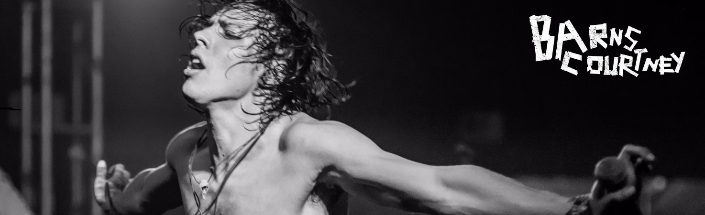
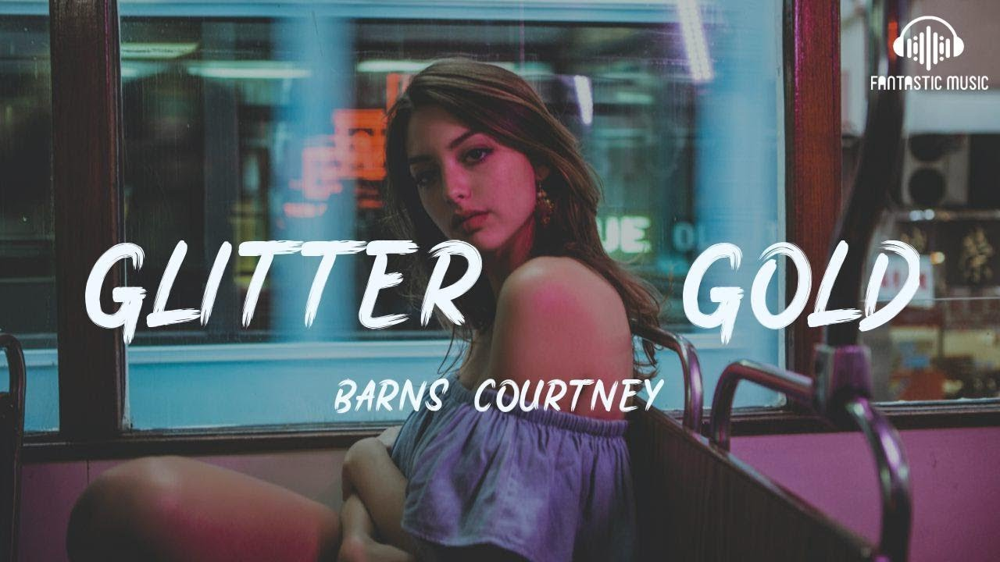
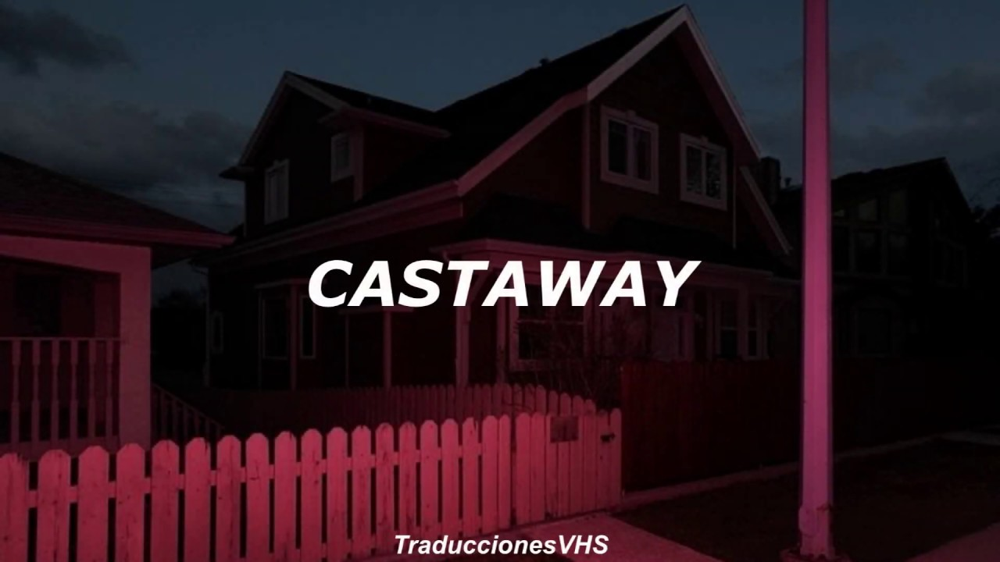
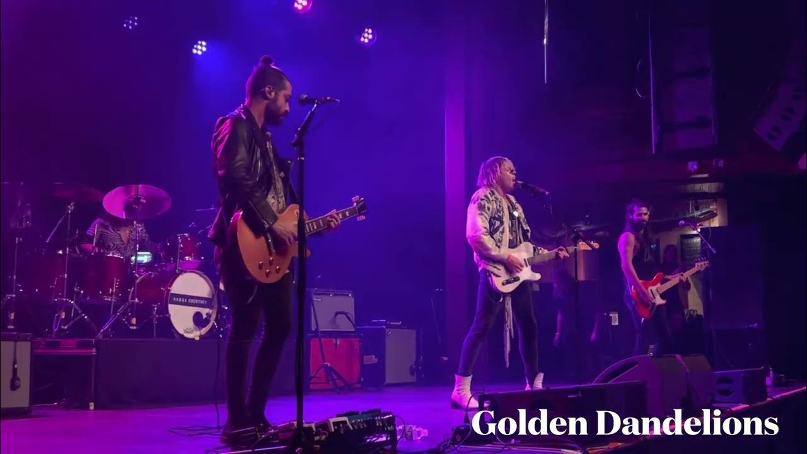
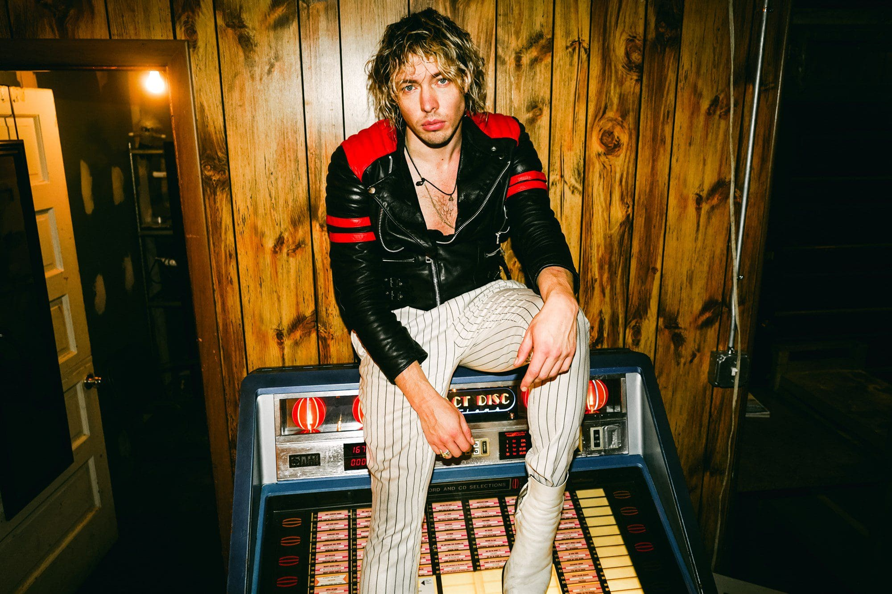
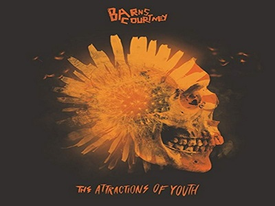
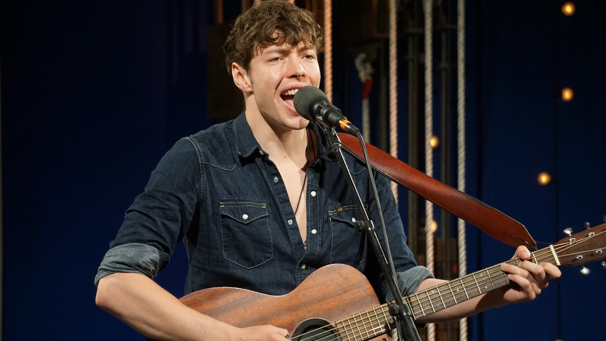
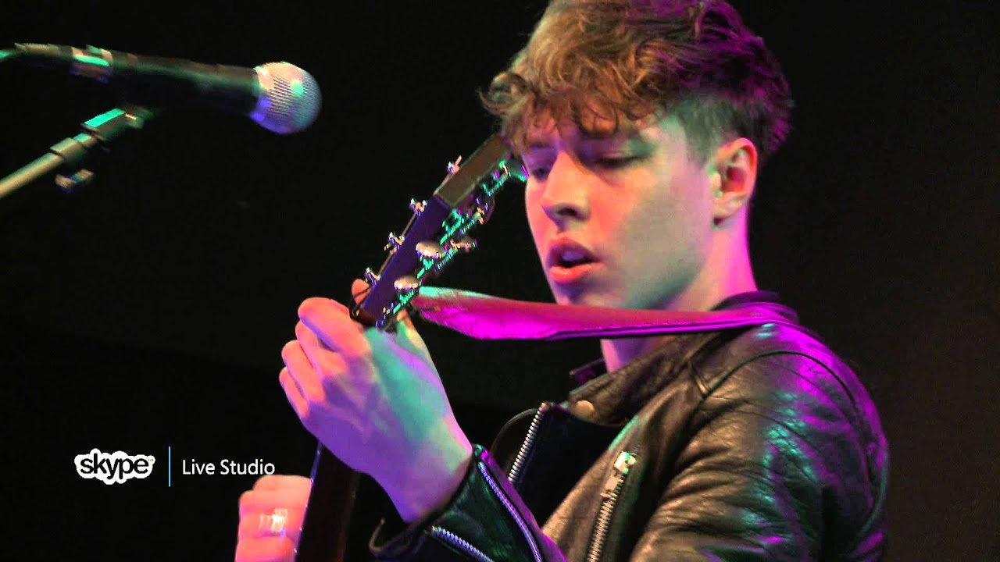
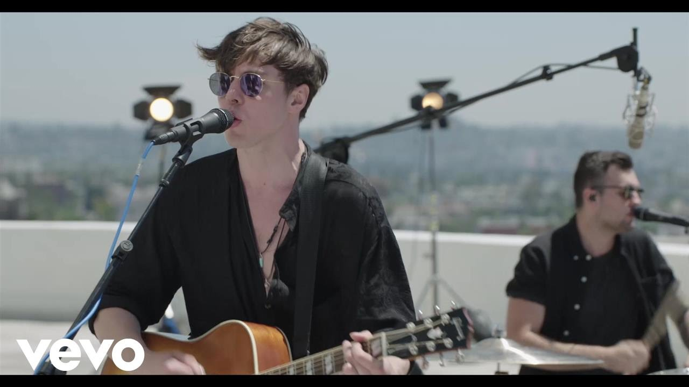
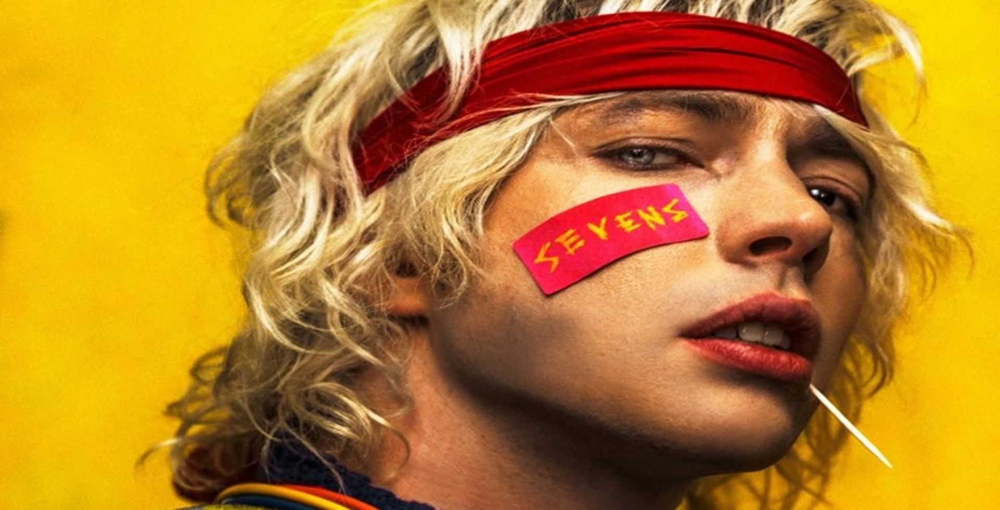

Aquí encontrarás un recorrido por la energía cruda y la vulnerabilidad que definen su música. Cada video y canción es un capítulo de lucha, libertad y fuego interior, pensado para que vivas la intensidad de su arte.
Explora las presentaciones en vivo, los videoclips oficiales y las sesiones íntimas que muestran la esencia de un artista que convierte cada nota en una chispa.

Album 404
“Glitter & Gold” de Barns Courtney es una
canción explosiva y llena de energía que mezcla blues rock con un estilo alternativo, destacando
por su ritmo tribal y su fuerza vocal.
Aunque originalmente pertenece a su primer álbum The Attractions of Youth (2017), su espíritu conecta
con la temática de 404 (2019), que explora la transición de la juventud ingenua hacia la madurez y sus sombras.

Album 404
“Castaway” es uno de los temas más intensos y atmosféricos del álbum 404 (2019) de Barns Courtney. Con un sonido oscuro y envolvente, refleja la sensación de aislamiento y pérdida de rumbo, en sintonía con la temática central del disco: el choque entre la juventud ingenua y la crudeza de la adultez.

Album 404
"Hollow" no es solo una canción, es un grito visceral contra el vacío existencial. Con guitarras distorsionadas y una voz desgarrada, Barns Courtney transforma la desesperación en catarsis. El tema encapsula la crudeza de sentirse roto por dentro, pero lo hace con una energía que electriza y arrastra al oyente.

The Attractions Of Youth
“Golden Dandelions” de Barns Courtney es un tema
hipnótico y atmosférico que mezcla rock alternativo con tintes psicodélicos, evocando imágenes de
libertad, naturaleza y un viaje emocional intenso.
Es una canción que atrapa por su ritmo envolvente y su voz rasgada, perfecta para quienes buscan
música con un aire místico y rebelde

The Attractions Of Youth
“Champion” de Barns Courtney es un himno de victoria
y resiliencia, cargado de energía rockera y espíritu desafiante.
Es una canción que celebra la fuerza interior y la capacidad de levantarse frente a la adversidad,
perfecta para momentos de motivación y empoderamiento.

The Attractions Of Youth
“Kicks” de Barns Courtney es un estallido
de energía cruda y rebelde: un himno de rock alternativo que mezcla guitarras abrasivas con
una voz desgarrada, transmitiendo la urgencia de vivir rápido y sin miedo.
Es un tema que captura la esencia juvenil de la búsqueda de adrenalina y libertad, ideal para
enganchar a quienes buscan música con actitud y potencia.

The Dull Dreams
“Little Boy” de Barns Courtney es un tema crudo
y visceral que mezcla energía rock con vulnerabilidad, mostrando la lucha interna entre la inocencia
perdida y la rabia contenida.
Es un himno de juventud rota, con un sonido explosivo que atrapa desde el primer acorde.

The Dull Dreams
Hands” de Barns Courtney es un tema explosivo y
visceral que combina guitarras abrasivas con una voz desgarrada, transmitiendo la lucha entre vulnerabilidad y poder.
Se ha convertido en uno de sus himnos más intensos.

The Dull Dreams
"Fire" es un himno de renacimiento: un estallido de
rock alternativo que convierte la derrota en fuerza. Con percusión tribal, coros incendiarios y una
voz desgarrada
Barns Courtney prende la chispa de la resistencia y la transforma en pura energía.

Cada uno de estos videos es más que una canción: son capítulos de una historia de lucha, libertad y fuego interior. Desde la vulnerabilidad de Little Boy hasta la energía explosiva de Fire, juntos forman un relato de caída, resistencia y renacimiento.

“La música es el fuego que nunca se apaga…”